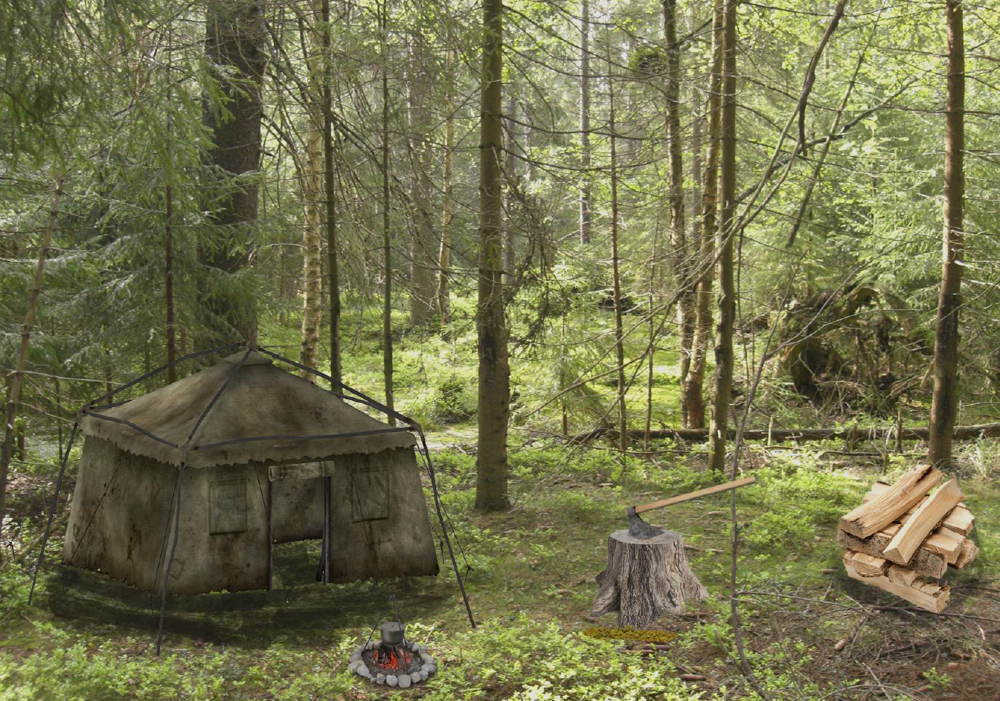

Beeldtaal
Visual Interface Design
Voor het vak beeldtaal moesten wij een aantal synoniemen en metaforen verbergen in een design door middel van bepaalde theorie.

bij de eindopdracht van beeldtaal heb ik ervoor gekozen om het probleem van de afsterving van de bijen uit te lichten. De bijen zijn belangrijk voor de maatschappij en zonder de bijen zullen de planten afsterven